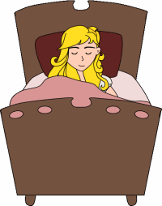

Capter 3

"Ahhh, this chair is just right," she sighed. But just as she settled down into the chair to rest, it broke into pieces!
Goldilocks and the Three Bears: sleeping-goldilocksGoldilocks was very tired by this time, she went upstairs to the bedroom. She lay down in the first bed, but it was too hard. Then she lay in the second bed, but it was too soft. Then she lay down in the third bed and it was just right. Goldilocks fell asleep.
As she was sleeping, the three bears came home.
"Someone's been eating my porridge," growled the Papa bear.
"Someone's been eating my porridge," said the Mama bear.
"Someone's been eating my porridge and they ate it all up!" cried the Baby bear.
"Someone's been sitting in my chair," growled the Papa bear.
"Someone's been sitting in my chair," said the Mama bear.
"Someone's been sitting in my chair and they've broken it to pieces," cried the Baby bear.
They decided to look around some more and when they got upstairs to the bedroom, Papa bear growled,
"Someone's been sleeping in my bed.”
"Someone's been sleeping in my bed, too" said the Mama bear.
"Someone's been sleeping in my bed and she's still there!" exclaimed the Baby bear.
Just then, Goldilocks woke up. She saw the three bears. She screamed, "Help!" And she jumped up and ran out of the room. Goldilocks ran down the stairs, opened the door, and ran away into the forest. She never returned to the home of the three bears.
THE END